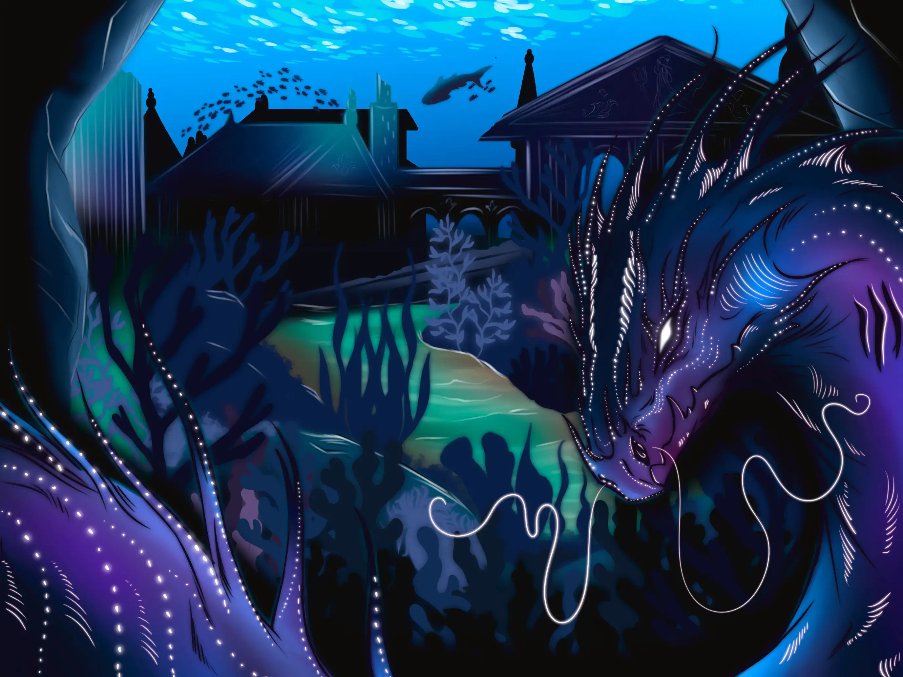
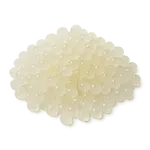

✨
Arzanskân
100%
Ta jauge est vide… ⚡
Pour poursuivre ta visite d’Arzankia, récolte un ingrédient magique !
Monde des Atlantides


« Sous la surface, les cités nacrées des Atlantides veillent. L’eau garde les secrets… et parfois des œufs qui brillent comme des étoiles. »
Extrait du livre
Entrée du monde
← Retour